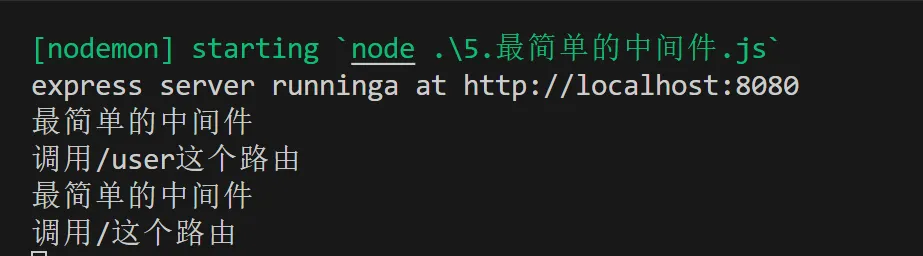

Express(二) 路由与中间件
1.搭建最简单服务器
上节课我们学习到用原生的 http 搭建服务器，今天我们学习使用 express 框架搭建 web 服务器。
方法也简单，通过导入 express 模块，创建 web 服务器，就可以使用了。
使用 app.get 和 post 监听客户端响应，其中第一个参数‘/user’是路由，req 是请求对象，res 是响应对象，它们各自又许多的方法。比如我们使用res.send()方法可以向客户端响应一个JSON对象。具体如何做呢？
我们需要在 VScode 上下载 Postcode 插件，它可以模拟客户端向我们创建的服务器发送请求。
另外我们可以下载 nodemon 安装包，它可以让我们在修改客户端代码后自动重启服务器，不需要我们手动关闭让后在重新启动，十分方便。启动命令安装：
1 | |
启动服务器：
1 | |
然后打开 Postcode 页面，点击左上角 create，选择 get 方法，输入我们客户端的 url 地址，别忘了加上后面的’/user’查询参数：
这样，我们就接收到了服务器发送的res.send（）中的数据了。
此外我们的服务器也可以获得 客户端 url 上的查询参数，通过req.query 直接获取客户端参数，并打印在终端查看。
如果我们需要获取动态参数的话，在路由端通过**:参数名**的形式，可以匹配多个参数，用 req.parmas 接收匹配到的动态参数并打印：
该过程具体的代码如下：
1 | |
2.路由模块化
当我们需要定义很多路由时，为了避免麻烦，可以使路由模块化。先在 router.js 中定义路由模块：
1 | |
然后使用路由，我们需要定义一个 router 来接收路由模块，使用 app.use()注册路由，，’/api’是该 url 请求路由的公共前缀，方便标识路由。
1 | |
3.中间件
Express 是一个自身功能极简，完全是由路由和中间件构成一个的 web 开发框架：从本质上来说，一个 Express 应用就是在调用各种中间件。
中间件（Middleware） 是一个函数，它可以访问请求对象（request object (req)）, 响应对象（response object (res)）, 和 web 应用中处于请求-响应循环流程中的中间件，一般被命名为 next 的变量。
next函数是实现多个中间件连续调用的关键，它表示把流转关系转交给下一个中间件或路由。
上游的中间件和下游的中间件及路由之间，共享同一份req和res。
中间件的作用主要包括以下几个方面：
- 请求和响应的处理：
- 中间件函数可以对请求对象（req）和响应对象（res）进行修改，从而影响后续中间件和最终的请求处理逻辑。
- 例如，可以解析请求体的数据，处理文件上传，添加响应头等。
- 控制请求的流转：
- 中间件可以决定是否将控制权传递给下一个中间件函数。
- 通过调用next()函数，可以将控制权传递给下一个中间件。如果不调用next()，请求将不会继续往下传递，从而可以实现请求的拦截和处理。
- 执行特定任务：
- 中间件可以执行各种任务，如用户认证、日志记录、错误处理等。
- 例如，可以在中间件中验证用户的身份信息，如果身份验证失败，可以直接返回错误响应，而不必进入下一个中间件或最终的路由处理函数。
- 路由处理：
全局中间件
我们可以定义一个中间件函数，在函数中别忘了在最后添加 next()，然后使用 app.use（）注册为全局生效。还有更简单的方法就是直接在 app.use()中定义中间件。
1 | |
由返回结果可以看到，先执行中间件，在执行路由。

定义多个中间件
1 | |
局部中间件
定义局部中间件，我们不把它放到 app.use()注册那它就是局部中间件，使用方法与全局中间件相同。只是我们想让那个中间件生效，就把他放到那个路由中，一个路由可以使用多个中间件，以顺序或者数组的方式放在 app.get()或 post()的参数中。
1 | |
中间件的分类
1.应用级别的中间件
通过app.use()或 app.get(0或 app.post()，绑定到app实例上的中间件，叫做应用级别的中间件。
2.路由级别的中间件
绑定到express.Router()实例上的中间件，叫做路由级别的中间件。它的用法和应用级别中间件没有任何区别。只不过，应用级别中间件是绑定到app 实例上，路由级别中间件绑定到router实例上。
3.错误级别的中间件
错误级别中间件的作用:专门用来捕获整个项目中发生的异常错误，从而防止项目异常崩溃的问题。
格式:必须有4个形参，形参顺序从前到后，分别是**(err, req, res, next)**。
1 | |
4.Express内置的中间件
express.static 快速托管静态资源的内置中间件，例如:HTML文件、图片、CSS样式等(无兼容性)
express.json解析JSON格式的请求体数据（有兼容性，仅在4.16.0+版本中可用)
express.urlencoded解析URL-encoded格式的请求体数据（有兼容性，仅在4.16.0+版本中可用)
1
2
3
4
5
6
7
8
9
10
11
12
13
14
15
16
17
18
19
20
21
22const express = require('express')
const app = express()
//配置解析application/json格式数据的内置中间件 解析JSON数据
app.use(express.json())
//通过express.urlencoded()这个中间件，来解析表单中的 url-encoded 格式的数据
app.use(express.urlencoded({ extended: false }))
app.post('/user', (req, res)=>{
//服务器使用req.body接收客户端发送的请求体数据
console.log(req.body);
res.send('ok')
})
app.post('/book', (req, res)=>{
console.log(req.body);
res.send('book')
})
app.listen(8080,()=>{
console.log('express server runninga at http://localhost:8080');
})5.第三方的中间件
非Express官方内置的，而是由第三方开发出来的中间件，叫做第三方中间件。在项目中大家可以按需下载并配置
第三方中间件，从而提高项目的开发效率。
例如:在express@4.16.0之前的版本中，经常使用body-parser这个第三方中间件，来解析请求体数据。使用步骤如下:运行npm install body-parser安装中间件
使用require 导入中间件
调用app.use()注册并使用中间件
1
2
3
4
5
6
7
8
9
10
11
12
13
14
15const express = require('express')
const app = express()
//导入解析表单数据的中间件
const parser = require('body-parser')
//注册中间件
app.use(parser.urlencoded({ extended: false}))
app.post('/user', (req, res)=>{
console.log(req.body);
res.send('ok')
})
app.listen(8080,()=>{
console.log('express server runninga at http://localhost:8080');
})